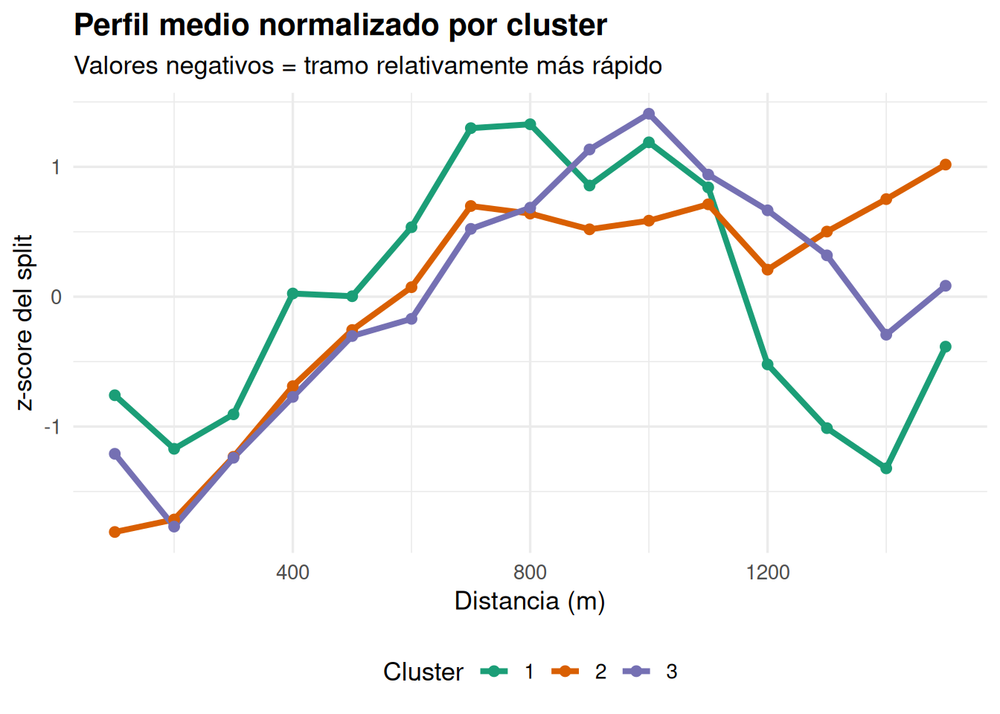
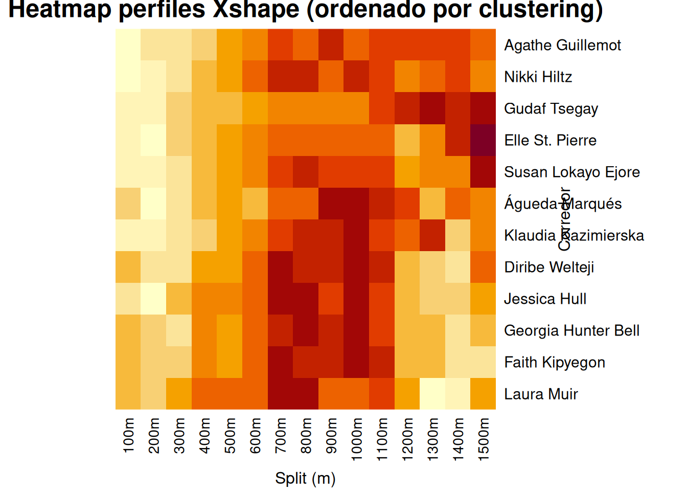

Este gráfico ayuda a visualizar “dónde” acelera o afloja cada cluster.
Interpretación de signos (en z-score):
Valores negativos: tramo relativamente más rápido (menor tiempo por 100m) respecto a la media del corredor.
Valores positivos: tramo relativamente más lento.
library(ggplot2)library(dplyr)library(tidyr)cluster_mean_long <- cluster_mean %>%pivot_longer(cols =all_of(split_cols),names_to ="split",values_to ="z") %>%mutate(dist_m =as.numeric(gsub("m", "", split)))ggplot(cluster_mean_long,aes(x = dist_m, y = z, color = cluster, group = cluster)) +geom_line(linewidth =1.4) +geom_point(size =2) +scale_color_brewer(palette ="Dark2") +labs(title ="Perfil medio normalizado por cluster",subtitle ="Valores negativos = tramo relativamente más rápido",x ="Distancia (m)",y ="z-score del split",color ="Cluster" ) +theme_minimal(base_size =13) +theme(legend.position ="bottom",plot.title =element_text(face ="bold") )

2.8 Heatmap de Xshape (perfiles normalizados)
Un heatmap permite ver, corredor por corredor, su patrón relativo de pacing.
Filas: corredores
Columnas: splits (100m…1500m)
Color: z-score del split (más lento vs más rápido respecto a su propia media)
Para mejorar la lectura, ordenamos las filas según el dendrograma del clustering.
# Orden de hojas del dendrogramaord <- hc$orderXshape_ord <- Xshape[ord, , drop =FALSE]clusters_ord <- clusters[ord]# Heatmap base R: desactivamos clustering interno porque ya ordenamosheatmap(Xshape_ord,Rowv =NA, Colv =NA,scale ="none",labRow =rownames(Xshape_ord),labCol =colnames(Xshape_ord),main ="Heatmap perfiles Xshape (ordenado por clustering)",xlab ="Split (m)",ylab ="Corredor")

El heatmap base R usa una paleta por defecto. Si prefieres controlar colores o anotar clusters por el lateral, se puede hacer con paquetes como pheatmap o ComplexHeatmap, pero aquí evitamos dependencias extra.
2.9 Etiquetado automático de estrategias
A continuación definimos métricas simples (pero interpretables) para “nombrar” estrategias.
kick: promedio últimos 300m (1300–1500). Negativo suele indicar kick (más - rápido al final).
fast_start: promedio primeros 200m (100–200). Negativo suele indicar salida agresiva.
variability: desviación estándar del perfil (irregularidad).
early_idx <- split_cols %in%c("100m","200m","300m","400m")late_idx <- split_cols %in%c("1200m","1300m","1400m","1500m")kick_idx <- split_cols %in%c("1300m","1400m","1500m")start_idx <- split_cols %in%c("100m","200m")strategy_metrics <-data.frame(Competitor =rownames(Xshape),cluster =factor(clusters),slope =rowMeans(Xshape[, late_idx, drop =FALSE]) -rowMeans(Xshape[, early_idx, drop =FALSE]),kick =rowMeans(Xshape[, kick_idx, drop =FALSE]),fast_start =rowMeans(Xshape[, start_idx, drop =FALSE]),variability =apply(Xshape, 1, sd))head(strategy_metrics)
Competitor cluster slope kick
Faith Kipyegon Faith Kipyegon 1 -0.22189923 -1.0552541
Jessica Hull Jessica Hull 1 0.24612380 -0.7110243
Georgia Hunter Bell Georgia Hunter Bell 1 -0.04718941 -0.8305337
Diribe Welteji Diribe Welteji 1 0.25056407 -0.6347623
Laura Muir Laura Muir 1 -0.76341136 -1.2997568
Susan Lokayo Ejore Susan Lokayo Ejore 2 1.71105548 0.5703518
fast_start variability
Faith Kipyegon -0.8333549 1
Jessica Hull -1.4767428 1
Georgia Hunter Bell -0.8619933 1
Diribe Welteji -0.9410073 1
Laura Muir -0.7125173 1
Susan Lokayo Ejore -1.6793693 1
2.9.2 Reglas de decisión (heurísticas)
Estas reglas usan umbrales en z-score. Son heurísticas: funcionan razonablemente, pero conviene ajustarlas si cambian el tipo de carrera, el nivel, o si quieres categorías más/menos estrictas.
Lógica general:
Si el final es relativamente más rápido (kick muy negativo) y además el perfil va a más (slope < 0), etiquetamos como kick final fuerte.
Si sale muy rápido (fast_start muy negativo) pero luego se desacelera (slope > 0), etiquetamos como salida rápida y se apaga.
Si el perfil es muy estable (pendiente pequeña y baja variabilidad), lo marcamos como ritmo constante.
Si no encaja claramente, lo dejamos como estrategia mixta.